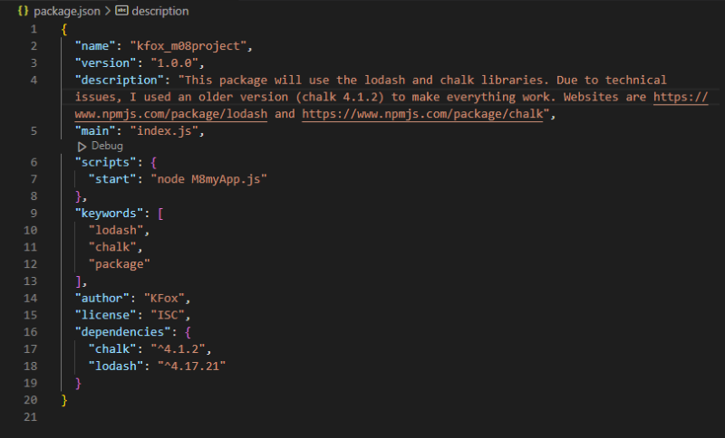
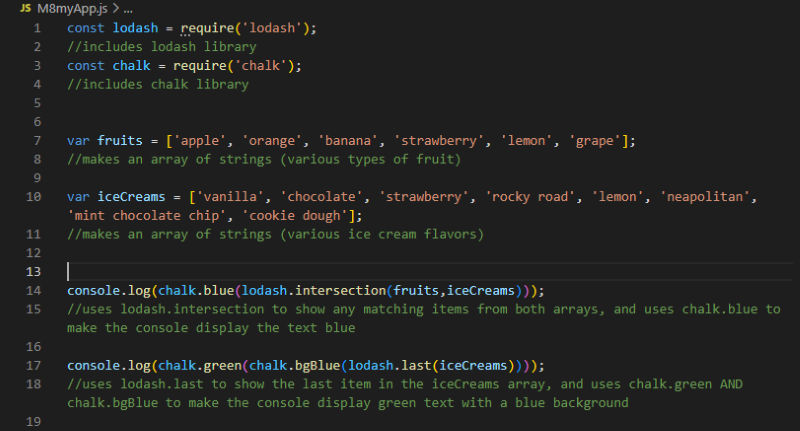
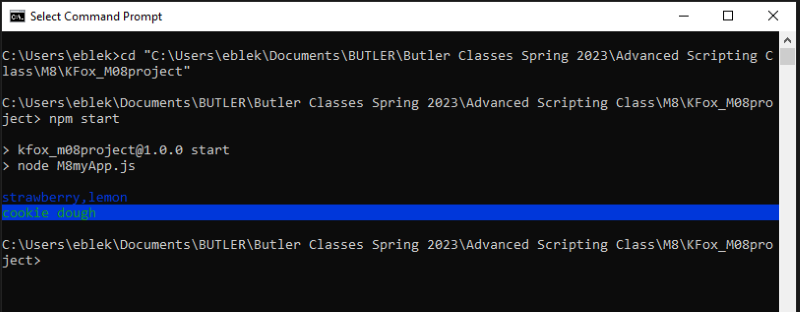

M8 Project
For this project, I made an application that uses a custom package, along with two dependencies: Lodash and Chalk. Lodash is a library with several functions that help us simplify our code, and Chalk is a module that lets us customize the color/appearance of output-text in our console.
For reference, our M8 Package Exercise explains these processes in greater detail.
Here is the package.json file showing both dependencies and a "start" script that makes it easier to run the script in the console.
My script "M8myApp.js" creates a couple of arrays with string values. I used the Lodash library to process info from the arrays and console.log the results. I also used Chalk to set the colors of the text for the console-log.
Below, we see the results of running M8myApp.js in the console.
